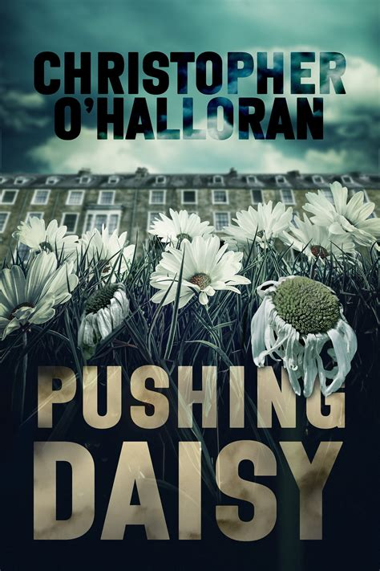
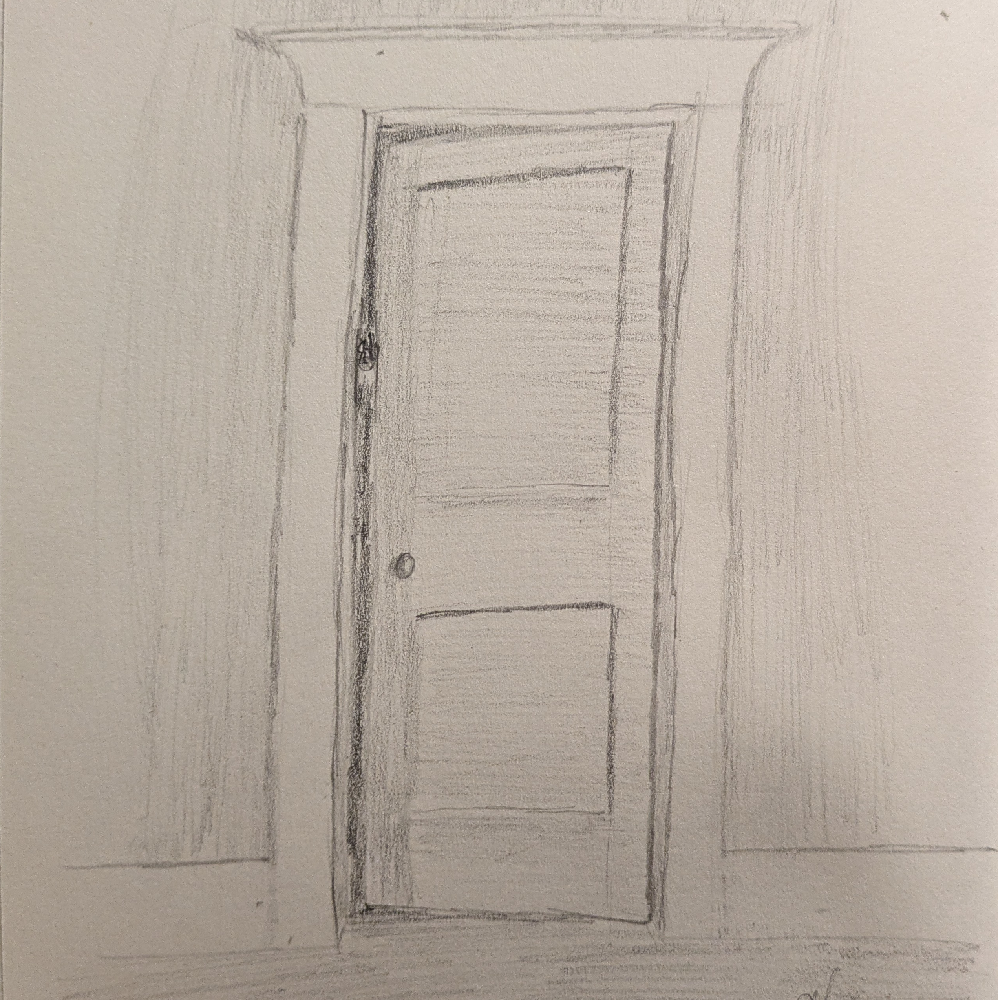

I’ve Been Reading: Pushing Daisy by Christopher O’Halloran

Published by Lethe Press
I’ve been busy as of late, so I’m writing this a few weeks after finishing the book in question. Though I must assure you, hypothetical reader, that this has nothing to do with the book itself. I really quite enjoyed it and it’s great to see Chris’ long-form work. He’s written a few shorts that really struck me. But we’re not here to talk about his shorts.
For those not familiar, Christopher O’Halloran is a Canadian actor-turned-writer who went to theatre school and afterwards decided that storytelling was at the heart of what made him love the theatre, so he cut out the middle man and started writing fiction. We know each other from the indie horror online world, Discord book clubs and the like. He’s a solid guy, a factory worker and family man like yours truly.
Pushing Daisy follows Roger Darling, a man who’s just lost his wife to suicide. It quickly becomes apparent that he is, in fact, a total prick. As he starts to rebuild his life and learn the error of his ways, he begins to experience strange events that suggest Daisy isn’t quite done with him.
This book is all about relationships and how they break people, and there’s plenty of character growth and tension throughout the story. It's not written with a thriller pace but that feels about right for this sort of story. There are, of course, also plenty of scary moments. In many ways a classic haunting, Pushing Daisy manages to avoid retreading tired tropes. The supporting cast are well-rounded and compelling, even when you desperately wish the main character would just shut up.
That last sentence isn’t meant to suggest that Roger Darling is unpleasant to read as a protagonist, by the way. Glimmers of kindness and a decent bit of growth mean that by the end of the story you’re rooting for him, even if he is unquestionably an arsehole. O’Halloran did a really good job threading the needle of making him convincingly prickly as a person without turning him into an out-and-out monster. No, hypothetical reader, the monster role is reserved for the dearly departed.
Daisy is almost more than a ghost, more like a revenant perhaps. I’ll not spoil the book by divulging too much detail, but that last quarter or so is potent. This isn’t a gothic ghost story, this is straight horror. But horror with heart, and horror that displays a profound belief in the power of people to grow and change.

Not-quite-closed doors freak me out
So, to sum up, read this if you like horror and you’re into stories about human relationships and the ways we hurt one another. There’s a nice mix of supernatural horror and psychological fuckery going on in this book.
That’s all from me for today.
Toodles,
–Antony F.